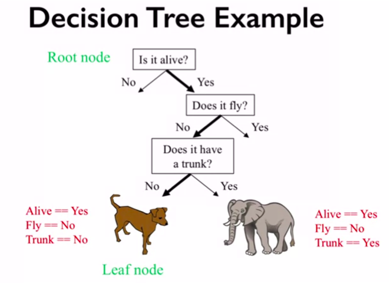
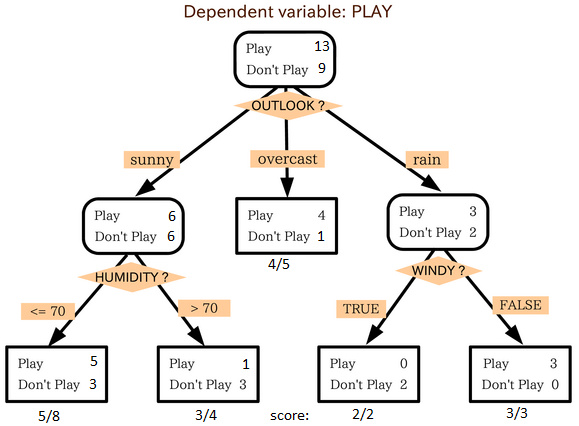

In-Depth: Decision Trees and Random Forests¶

This notebook contains an excerpt from the Python Data Science Handbook by Jake VanderPlas; the content is available on GitHub.
The text is released under the CC-BY-NC-ND license, and code is released under the MIT license. If you find this content useful, please consider supporting the work by buying the book!
Previously
simple generative classifier (naive Bayes; see In Depth: Naive Bayes Classification)
powerful discriminative classifier (support vector machines; see In-Depth: Support Vector Machines).
Random Forests¶
Another powerful & non-parametric algorithm
Random forests are an example of an ensemble method,
meaning that it relies on aggregating the results of an ensemble of simpler estimators.
The sum can be greater than the parts:
a majority vote among a number of estimators can end up being better than any of the individual estimators doing the voting!
We will see examples of this in the following sections.
Motivating Random Forests: Decision Trees¶
%matplotlib inline
import numpy as np
import matplotlib.pyplot as plt
import seaborn as sns; sns.set()
Random forests are an example of an ensemble learner built on decision trees.
For this reason we’ll start by discussing decision trees.
Decision trees are extremely intuitive ways to classify or label objects:
you simply ask a series of questions designed to zero-in on the classification.
For example, if you wanted to build a decision tree to classify an animal you come across while on a hike, you might construct the one shown here:



The binary splitting makes this extremely efficient: in a well-constructed tree,
each question will cut the number of options by approximately half,
very quickly narrowing the options even among a large number of classes.
The trick comes in deciding which questions to ask at each step.
Using axis-aligned splits in the data:
each node in the tree splits the data into two groups using a cutoff value within one of the features.
Let’s now look at an example of this.
案例分析：今天是否打球⛹？¶
一组14天天气数据(指标包括outlook，temperature，humidity，windy)，并已知这些天气是否打球(play)。
如果给出新一天的气象指标数据:sunny,cool,high,TRUE，判断一下会不会去打球。
import pandas as pd
import numpy as np
df = pd.read_excel('./data/play.xlsx')
df['y'] = [1 if i=='yes' else 0 for i in df['play']]
df
/opt/anaconda3/lib/python3.7/site-packages/openpyxl/worksheet/_reader.py:300: UserWarning: Unknown extension is not supported and will be removed
warn(msg)
| Outlook | temperature | humidity | windy | play | y | |
|---|---|---|---|---|---|---|
| 0 | Sunny | hot | high | False | no | 0 |
| 1 | Sunny | hot | high | True | no | 0 |
| 2 | Overcast | hot | high | False | yes | 1 |
| 3 | Rainy | mild | high | False | yes | 1 |
| 4 | Rainy | cool | normal | False | yes | 1 |
| 5 | Rainy | cool | normal | True | no | 0 |
| 6 | Overcast | cool | normal | True | yes | 1 |
| 7 | Sunny | mild | high | False | no | 0 |
| 8 | Sunny | cool | normal | False | yes | 1 |
| 9 | Rainy | mild | normal | False | yes | 1 |
| 10 | Sunny | mild | normal | True | yes | 1 |
| 11 | Overcast | mild | high | True | yes | 1 |
| 12 | Overcast | hot | normal | False | yes | 1 |
| 13 | Rainy | mild | high | True | no | 0 |
Entropy¶
样本集合总样本数为$D$，其中共有$K$类样本，其中第$k$类样本所占比例为$p_k (k = 1, 2, …K)$，则$D$个样本的信息熵$E(D)$为：
$$E(D) = \sum_{k=1}^{K} -P_k log_2{P_k}$$
df["play"].value_counts()
yes 9
no 5
Name: play, dtype: int64
E0 = -9/14 * np.log2(9/14) - 5/14 * np.log2(5/14) = 0.9402859586706311
Information Gains¶
假定离散属性$a$有$V$个可能的取值$(a_1, a_2,…a_V)$。
如果使用属性$a$对$D$个样本进行划分，则会产生$V$个分支节点。
假设其中第$v$个分支节点包含$D_v$个样本，
我们可以计算出$D_v$个样本的信息熵
考虑到样本数越多的分支节点影响力越大，给分支节点赋予权重$D_v/D$
可以计算使用属性$a$对$D$个样本进行划分可以获得的信息增益（information gain）: $Gain(D, a) = Ent(D) - \sum_{v=1}^{V} \frac{D_v}{D} Ent(D_v) $
df.groupby(['windy', 'y']).count()['play']
windy y
False 0 2
1 6
True 0 3
1 3
Name: play, dtype: int64
E1 = -6/8 * np.log2(6/8) - 2/8 * np.log2(2/8) = 0.8112781244591328
E2 = -3/6 * np.log2(3/6) - 3/6 * np.log2(3/6) = 1.0
Gain (wind) = 0.940 - (8/14) * 0.811 - (6/14) * 1.0 = 0.048
df.groupby(['humidity', 'y']).count()['play']
humidity y
high 0 4
1 3
normal 0 1
1 6
Name: play, dtype: int64
E1 = -3/7 * np.log2(3/7) - 4/7 * np.log2(4/7) = 0.9852281360342515
E2 = -6/7 * np.log2(6/7) - 1/7 * np.log2(1/7) = 0.5916727785823275
Gain (humidity) = 0.940 - (7/14) * 0.985 - (7/14) * 0.592 = 0.151
def entropy(freq_list):
e = 0
for i in freq_list:
p = i/np.sum(freq_list)
e += -p*np.log2(p)
return e
freq_list = df[df['Outlook']=='Sunny']['play'].value_counts()
entropy(freq_list)
0.9709505944546686
def information_gain(feature_name, y_name):
freq_list0 = df[y_name].value_counts()
n = np.sum(freq_list0)
e0 = entropy(freq_list0)
info_gain = e0
for i in df[feature_name].unique():
freq_list_i = df[df[feature_name]==i][y_name].value_counts()
e_i = np.sum(freq_list_i)/n * entropy(freq_list_i)
info_gain -= e_i
return info_gain
features = ['Outlook', 'temperature', 'humidity', 'windy']
{i:information_gain(i, 'play') for i in features}
{'Outlook': 0.24674981977443933,
'temperature': 0.02922256565895487,
'humidity': 0.15183550136234164,
'windy': 0.048127030408269544}

Creating a decision tree¶
Consider the following two-dimensional data, which has one of four class labels:
from sklearn.datasets import make_blobs
X, y = make_blobs(n_samples=300, centers=4,
random_state=0, cluster_std=1.0)
plt.scatter(X[:, 0], X[:, 1], c=y, s=50, cmap='rainbow');
A simple decision tree built on this data will iteratively split the data along one or the other axis
according to some quantitative criterion, and
at each level assign the label of the new region according to a majority vote of points within it.
This figure presents a visualization of the first four levels of a decision tree classifier for this data:
Notice¶
after the each split
Nodes that contain all of one color will not be splitted again.
At each level every region is again split along one of the two features.
This process of fitting a decision tree to our data can be done in Scikit-Learn with the DecisionTreeClassifier estimator:
from sklearn.tree import DecisionTreeClassifier
tree = DecisionTreeClassifier().fit(X, y)
Let’s write a quick utility function to help us visualize the output of the classifier:
def visualize_classifier(model, X, y, ax=None, cmap='rainbow'):
ax = ax or plt.gca()
# Plot the training points
ax.scatter(X[:, 0], X[:, 1], c=y, s=30, cmap=cmap,
clim=(y.min(), y.max()), zorder=3)
ax.axis('tight')
ax.axis('off')
xlim = ax.get_xlim()
ylim = ax.get_ylim()
# fit the estimator
model.fit(X, y)
xx, yy = np.meshgrid(np.linspace(*xlim, num=200),
np.linspace(*ylim, num=200))
Z = model.predict(np.c_[xx.ravel(), yy.ravel()]).reshape(xx.shape)
# Create a color plot with the results
n_classes = len(np.unique(y))
contours = ax.contourf(xx, yy, Z, alpha=0.3,
levels=np.arange(n_classes + 1) - 0.5,
cmap=cmap, vmin = y.min(), vmax = y.max(),
zorder=1)
ax.set(xlim=xlim, ylim=ylim)
Now we can examine what the decision tree classification looks like:
visualize_classifier(DecisionTreeClassifier(), X, y)
If you’re running this notebook live, you can use the helpers script included in The Online Appendix to bring up an interactive visualization of the decision tree building process:
# helpers_05_08 is found in the online appendix
import helpers_05_08
helpers_05_08.plot_tree_interactive(X, y);
Notice that as the depth increases, we tend to get very strangely shaped classification regions;
for example, at a depth of five, there is a tall and skinny purple region between the yellow and blue regions.
It’s clear that this is less a result of the true, intrinsic data distribution
It’s more a result of the particular sampling or noise properties of the data.
That is, this decision tree, even at only five levels deep, is clearly over-fitting our data.
Decision trees and over-fitting¶
Such over-fitting turns out to be a general property of decision trees:
it is very easy to go too deep in the tree
to fit details of the particular data rather than the overall properties of the distributions they are drawn from.
Another way to see this over-fitting is
to look at models trained on different subsets of the data
for example, in this figure we train two different trees, each on half of the original data:

It is clear that
in some places, the two trees produce consistent results
e.g., in the four corners
while in other places, the two trees give very different classifications
e.g., in the regions between any two clusters
The key observation is that the inconsistencies tend to happen where the classification is less certain,
If you are running this notebook live, the following function will allow you to interactively display the fits of trees trained on a random subset of the data:
# helpers_05_08 is found in the online appendix
import helpers_05_08
helpers_05_08.randomized_tree_interactive(X, y)
Just as using information from two trees improves our results, we might expect that using information from many trees would improve our results even further.
by using information from both of these trees, we might come up with a better result!¶
Ensembles of Estimators: Random Forests¶
Multiple overfitting estimators can be combined to reduce the effect of this overfitting. This notion is called bagging.
an ensemble method (集成学习)
Bagging makes use of an ensemble (a grab bag, perhaps) of parallel estimators,
each of which over-fits the data, and
averages the results to find a better classification.
An ensemble of randomized decision trees is known as a random forest.
This type of bagging classification can be done manually using Scikit-Learn’s BaggingClassifier meta-estimator, as shown here:
from sklearn.tree import DecisionTreeClassifier
from sklearn.ensemble import BaggingClassifier
tree = DecisionTreeClassifier()
bag = BaggingClassifier(tree, n_estimators=100, max_samples=0.8,
random_state=1)
bag.fit(X, y)
visualize_classifier(bag, X, y)
In this example, we have randomized the data by fitting each estimator with a random subset of 80% of the training points.
In practice, decision trees are more effectively randomized by injecting some stochasticity in how the splits are chosen:
this way all the data contributes to the fit each time
but the results of the fit still have the desired randomness.
when determining which feature to split on, the randomized tree might select from among the top several features.
You can read more technical details about these randomization strategies in the Scikit-Learn documentation and references within.
In Scikit-Learn, such an optimized ensemble of randomized decision trees is implemented in the RandomForestClassifier estimator, which takes care of all the randomization automatically.
All you need to do is select a number of estimators, and it will very quickly (in parallel, if desired) fit the ensemble of trees:
from sklearn.ensemble import RandomForestClassifier
model = RandomForestClassifier(n_estimators=100, random_state=0)
visualize_classifier(model, X, y);
We see that by averaging over 100 randomly perturbed models, we end up with an overall model that is much closer to our intuition about how the parameter space should be split.
Random Forest Regression¶
In the previous section we considered random forests within the context of classification.
Random forests can also be made to work in the case of regression (that is, continuous rather than categorical variables).
The estimator to use for this is the
RandomForestRegressor, andthe syntax is very similar to what we saw earlier.
Consider the following data, drawn from the combination of a fast and slow oscillation:
rng = np.random.RandomState(42)
x = 10 * rng.rand(200)
def model(x, sigma=0.3):
fast_oscillation = np.sin(5 * x)
slow_oscillation = np.sin(0.5 * x)
noise = sigma * rng.randn(len(x))
return slow_oscillation + fast_oscillation + noise
y = model(x)
plt.errorbar(x, y, 0.3, fmt='o');
Using the random forest regressor, we can find the best fit curve as follows:
from sklearn.ensemble import RandomForestRegressor
forest = RandomForestRegressor(200)
forest.fit(x[:, None], y)
xfit = np.linspace(0, 10, 1000)
yfit = forest.predict(xfit[:, None])
ytrue = model(xfit, sigma=0)
plt.errorbar(x, y, 0.3, fmt='o', alpha=0.5)
plt.plot(xfit, yfit, '-r');
plt.plot(xfit, ytrue, '-y', alpha=1);
Here the true model is shown in the smooth gray curve, while the random forest model is shown by the jagged red curve.
As you can see, the non-parametric random forest model is flexible enough to fit the multi-period data, without us needing to specifying a multi-period model!
Example: Random Forest for Classifying Digits¶
Earlier we took a quick look at the hand-written digits data (see Introducing Scikit-Learn).
Let’s use that again here to see how the random forest classifier can be used in this context.
from sklearn.datasets import load_digits
digits = load_digits()
digits.keys()
dict_keys(['data', 'target', 'target_names', 'images', 'DESCR'])
To remind us what we’re looking at, we’ll visualize the first few data points:
# set up the figure
fig = plt.figure(figsize=(6, 6)) # figure size in inches
fig.subplots_adjust(left=0, right=1, bottom=0, top=1, hspace=0.05, wspace=0.05)
# plot the digits: each image is 8x8 pixels
for i in range(64):
ax = fig.add_subplot(8, 8, i + 1, xticks=[], yticks=[])
ax.imshow(digits.images[i], cmap=plt.cm.binary, interpolation='nearest')
# label the image with the target value
ax.text(0, 7, str(digits.target[i]))

We can quickly classify the digits using a random forest as follows:
from sklearn.model_selection import train_test_split
Xtrain, Xtest, ytrain, ytest = train_test_split(digits.data, digits.target,
random_state=0)
model = RandomForestClassifier(n_estimators=1000)
model.fit(Xtrain, ytrain)
ypred = model.predict(Xtest)
We can take a look at the classification report for this classifier:
from sklearn import metrics
print(metrics.classification_report(ypred, ytest))
precision recall f1-score support
0 1.00 0.97 0.99 38
1 0.98 0.98 0.98 43
2 0.95 1.00 0.98 42
3 0.98 0.96 0.97 46
4 0.97 1.00 0.99 37
5 0.98 0.96 0.97 49
6 1.00 1.00 1.00 52
7 1.00 0.96 0.98 50
8 0.94 0.98 0.96 46
9 0.98 0.98 0.98 47
accuracy 0.98 450
macro avg 0.98 0.98 0.98 450
weighted avg 0.98 0.98 0.98 450
And for good measure, plot the confusion matrix:
from sklearn.metrics import confusion_matrix
mat = confusion_matrix(ytest, ypred)
sns.heatmap(mat.T, square=True, annot=True, fmt='d', cbar=False)
plt.xlabel('true label')
plt.ylabel('predicted label');

We find that a simple, untuned random forest results in a very accurate classification of the digits data.
Summary of Random Forests¶
This section contained a brief introduction to the concept of ensemble estimators, and in particular the random forest – an ensemble of randomized decision trees. Random forests are a powerful method with several advantages:
Both training and prediction are very fast, because of the simplicity of the underlying decision trees.
In addition, both tasks can be straightforwardly parallelized, because the individual trees are entirely independent entities.
The multiple trees allow for a probabilistic classification:
a majority vote among estimators gives an estimate of the probability (accessed in Scikit-Learn with the
predict_proba()method).
The nonparametric model is extremely flexible, and can thus perform well on tasks that are under-fit by other estimators.
A primary disadvantage of random forests is that the results are not easily interpretable:
if you would like to draw conclusions about the meaning of the classification model, random forests may not be the best choice.